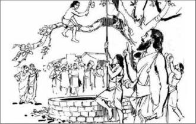

नाशिक जवळील भोगुर गावचे कुलकर्णी कृष्णाजीपंत यांचा विवाह झाला आणि त्यांना अपत्यप्राप्ती झाली. परंतु दुर्दैवाने त्यांची पत्नी आणि ते अपत्य लवकरच मृत्यू पावले. या आघातामुळे कृष्णाजीपंत गावातील सर्व निरवाणी सोडून तीर्थाटनासाठी बाहेर पडले.
जन्म आणि बालपण
नाशिक जवळील भोगुर गावचे कुलकर्णी कृष्णाजीपंत यांचा विवाह झाला. परंतु पत्नी व अपत्य यांचे लवकरच निधन झाले. यावरून त्यांनी तीर्थाटनाची दिशा स्वीकारली आणि अनेक तीर्थक्षेत्रांना भेट देत श्री महालक्ष्मीच्या दर्शनासाठी कोल्हापूरला आले.
कोल्हापूरमध्ये बरवाजीपंत कुलकर्णी यांची भेट झाली. त्यांच्या बहिणीचा विवाह व्हावयचा होता. पूर्वसंचितानुसार कृष्णाजीपंत आणि बरवाजीपंत यांची भेट झाली. बरवाजीपंतांच्या विनंतीवरून कृष्णाजीपंतांनी त्यांच्या बहिणीशी रखुमाबाईंशी विवाह करण्यास मान्यता दिली. याच युगुलाचे पुढील जीवन, समर्थांच्या कृपेने कल्याणमय झाले.
गुरू शिष्यांची भेट
सन १६४५ च्या कालावधीमध्ये समर्थ रामदास स्वामी धर्मस्थापनेसाठी महाराष्ट्रात परत आले. समाजाला धर्ममार्गावर आणण्यासाठी ठिकठिकाणी कीर्तन होत असे. समर्थांच्या ओजस्वी आणि रसाळ कीर्तनांनी प्रभावित होऊन बरवाजीपंतांनी समर्थांजवळ शिष्यत्व ग्रहण करण्याची इच्छा व्यक्त केली.
समर्थांनीही त्यांची पारख करून अनुग्रह देण्याचे मान्य केले. ठरलेल्या दिवशी समर्थ बरवाजीपंतांच्या घरी आले आणि अनुग्रह दिला. गुरुदक्षिणा देण्यास सांगितल्यावर समर्थांनी ती नाकारली आणि “द्यायचेच असेल तर रामकार्यासाठी अंबाजी दे” असे सांगितले.
“द्यायचेच असेल तर रामकार्यासाठी अंबाजी दे.”
अंबाजीचे कल्याण झाले
महाराष्ट्रात परत आल्यावर समर्थ रामदास स्वामींनी ठिकठिकाणी रामजन्मोत्सव सुरू केले. असाच एक उत्सव सातारच्या जवळील मसूर या गावात झाला. रामनवमीच्या दिवशी रथयात्रा चालू असताना रथ एका झाडाजवळ अडला. रथ पुढे जाण्यासाठी ती फांदी तोडावी लागणार होती; पण ती फांदी खोल विहीरीवर होती. या बिकट प्रसंगी अंबाजी पुढे आले आणि झाडावर चढून फांदी तोडली. फांदीसह अंबाजीही विहीरीत पडले.
रस्ता मोकळा झाला आणि रथ पुढे गेला. संध्याकाळी सर्वांना अंबाजीचे स्मरण झाले. सगळ्या शिष्यांनी समर्थांना प्रार्थना केली. समर्थ त्या विहीरीजवळ आले व विचारले, “अंबाजी, कल्याण आहे ना?” आतून उत्तर आले, “स्वामी, आपल्या कृपेने सर्व कल्याण आहे.”

समर्थांच्या सहवासात
इ.स. १६४८ ते १६७८ पर्यंत कल्याण स्वामी हे रामदास स्वामींबरोबर सावलीप्रमाणे होते. श्री आत्माराम स्वामी म्हणतात:
आरंभापासोनी शेवटवरी | सद्गुरूचर्या जे नानापरी | नाना अनुबद्ध उपासना सारी | कल्याण महाराजा ठाऊक ||
समर्थ कल्याणांना टाळ फेकून मारतात
समर्थांनी केलेल्या काव्यातील आवश्यक तो भाग कल्याण स्वामी त्या-त्या वेळी सांगत असत. आणि तो अभंग आठवला नाही यावरून समर्थांनी त्यांना टाळ फेकून मारला. डोक्यातून रक्ताची धार लागली. नंतर समर्थांनी ती जखम स्वहस्ते बांधली. या प्रसंगाने त्यांच्या गुरूभक्तीची तळमळ दिसून आली.
कल्याणा छाटी उडाली!
सज्जनगडावर असताना एकदा जोराचा वारा सुटला. समर्थांच्या अंगावरील वस्त्र (छाटी) वाऱ्याने उडले. समर्थ उद्गारले, “कल्याणा छाटी उडाली!” हे ऐकून कल्याण स्वामीने त्या कड्यावरून तात्काळ उडी टाकली आणि समर्थांचे वस्त्र हवेतच झेलले. त्याच वेळी त्यांच्या परोपकाराची आणि गुरूसेवकत्वाची कमालीची निष्ठा दिसली.
खांडुकची गोष्ट
एकदा समर्थांना पायाला खांडुक (गळु) झाला. ते खांडुक चोखून मोकळे करणे हे उपचार होते, पण हे काम कोणीच करत नव्हते. ते पाहून कल्याण स्वामींनी समर्थांचा पाय हातात घेतला आणि खांडुकावरील पट्टी सोडून तो तोंड लावला. त्यातून अत्यंत सुमधूर आंबा निघाला. शिष्यांची परीक्षा घेण्यासाठी समर्थ अनेक लीला करून असत; कल्याण स्वामींची गुरूभक्ती पाहून सर्वजण आवाक झाले.
ब्रह्मपिसा
एकदा श्री समर्थांनी शिष्यांची परीक्षा घेण्यासाठी ब्रह्मपिस्याचे सोंग घेतले. जटा सोडल्या, कपालावर शेंदूराचा मळवट भरला आणि हातामध्ये तलवार घेऊन रौद्र रूप धारण केले. सज्जनगडावरील शिष्य भयभीत झाले. कल्याण स्वामी गडावर नव्हते. शिष्यांनी त्यांना बोलावले आणि सांगितले की समर्थांना वेड लागले आहे. तेव्हा कल्याण स्वामी क्षणात तेथे आले.
कल्याण स्वामींना पहाताच समर्थ म्हणाले, “कल्याणा, जवळ येऊ नकोस. नाहितर तुझी खांडोळी करून टाकीन.” तरीही कल्याण स्वामी शांतपणे समर्थांकडे जाऊ लागले. तेव्हा समर्थ म्हणाले, “गुरू सेवा करताना गुरूच्या हातून आलेला मृत्यू हाच मोक्ष.” यावरून कल्याण स्वामींची गुरूनिष्ठा आणि निःस्वार्थ सेवा स्पष्ट दिसते.
विड्याची पाने
एकदा समर्थ आपल्या शिष्यपरिवारासह रामच्या घळीमध्ये होते. मध्यरात्री समर्थांनी पान खाण्याची इच्छा व्यक्त केली. पण तिथे विड्याची पाने नव्हती. कल्याण स्वामी इतक्या काळोखात त्या घनदाट अरण्यात पाने आणण्यास गेले. बराच वेळ परत न आल्यामुळे समर्थ स्वतः शोधात निघाले. काही अंतरावर कल्याण स्वामी निपचित पडलेले दिसले. त्यांना विषारी सापाने दंश केला होता. त्यानंतर समर्थांनी ते विष उतरवले आणि सर्वजण परत घळीमध्ये आले.
समर्थांच्या वस्त्रांना नमस्कार
नेहमीप्रमाणे कल्याण स्वामी नदीवर वस्त्र धुण्यासाठी घेऊन गेले. त्यांनी स्वतःचे आणि समर्थांचे वस्त्र वेगळ्या ठिकाणी ठेवले. आधी समर्थांचे वस्त्र धुवून त्यांना नमस्कार केला. हे पाहून इतर लोकांनी विचारले. तेव्हा कल्याण स्वामी म्हणाले, “ही वस्त्रे माझ्या गुरूंची श्री समर्थ रामदास स्वामींची आहेत, म्हणून ती मला पूज्य आहेत.” हे ऐकून लोकही त्यांच्याबरोबर समर्थांच्या दर्शनाला गेले.
रत्न काढून ठेवतात
एकदा समर्थांनी कल्याण स्वामींना काही रत्ने परिधान करण्यास दिली असता कल्याण स्वामींचा चेहरा उदास झाला. याचे कारण विचारले असता त्यांनी सांगितले, “एकदा श्रीराममय अलंकार धारण केल्यावर या पाषाणाचा काय उपयोग? उलट या रत्नांमुळे आपल्या सेवेत अंतरच पडेल.” यावरून समर्थ समाधान पावले आणि त्यांनी ती रत्ने काढण्याची परवानगी दिली.
एका भक्ताने सोन्याची दोन कडी दिली असता त्यांनी ती कोठीघरात टाकून दिली. हातामध्ये घातली नाहीत. त्यांच्या या विरक्तीमुळेच समर्थ म्हणाले, “यासी गुरुत्व होईल लभ्य | अचूक घडला की परमार्थलाभ…”
चोरांना पिटाळले आणि हत्ती नियंत्रणात आणला
एकदा कल्याण स्वामी श्री समर्थांचे पाय चेपित बसले असतांना काही चोर सज्जनगडावर आले. त्यांनी समर्थांची आज्ञा घेऊन सर्व चोरांशी एकट्याने सामना केला आणि सर्व चोरांना पिटाळून लावले.
ऐकाकारी यात्रेत श्री समर्थ आणि कल्याण स्वामी गेले होते. तेथे एक हत्ती उधळला. लोक घाबरले. कल्याण स्वामीनी आपल्या शारिरीक क्षमतेचा प्रत्यय दिला आणि उधळलेला हत्ती नियंत्रणात आणला. अनेक लोकांचे जीव वाचले.
दाळगप्पू
समर्थांना सज्जनगडावरील तळ्याचे पाणी आरोग्याला योग्य नसे. म्हणून दररोज कल्याण स्वामी सज्जनगड उतरून खाली वाहणार्या उरमोडी नदीतून दोन प्रचंड हंडे घेऊन पाणी आणीत असत. यामुळे त्यांचे शारिरीक कष्ट मोठे होते. दिवसभर असे काम केल्यावर त्यांना अर्ध्या शेअर तूप, दोन शेर डाळ आणि एक शेर गूळ देण्यात येत असे. अनेक शिष्य त्यांना “दाळगप्पू” म्हणत असत.
काही शिष्य संगीत, दासबोध पारायण, किंवा पांडित्याचा अभिमान धरून बसले होते. कल्याण स्वामी मात्र पाणी वाहणे, लेखन करणे, सेवा करणे आणि गुरूसेवा हीच सच्ची भक्ती समजत. याच विषयावर समर्थ आणि कल्याण स्वामी यांच्यातील संवादामुळे दासगीता निर्माण झाली.
जगदोध्दाराची आज्ञा
आपला प्रिय शिष्य कल्याण सर्व प्रकारच्या परीक्षांमध्ये तावून सुलाखून निघाला आहे. आता या परिपूर्ण शिष्याने इतरांनाही आपल्यासारखे करावे अशा इच्छेने समर्थांनी कल्याण स्वामींना जगदोध्दार करण्यासाठी परांडा, डोमगाव या भागात जाण्याची आज्ञा केली. त्यामुळे इ.स. १६७८ मध्ये कल्याण स्वामी परांडा, डोमगावाच्या मार्गावर निघाले.
डोमगावच्या मार्गावर
डोमगावकडे जाण्यापूर्वी कल्याण स्वामी शिरगावला गेले आणि बंधू दत्तात्रय स्वामी यांची भेट घेतली. पुढे पंढरपूरच्या वाटेवर निबिड अरण्यात हणमंत नावाचा दरोडेखोराने त्यांना आडवले. सर्व लोक भयभीत झाले. तेव्हा कल्याण स्वामी म्हणाले, “आपले गुरु श्री समर्थ असताना आपल्याला भय नाही.” हे म्हणून त्यांनी एक धीरगंभीर कटाक्ष त्याच्यावर टाकला. तो दरोडेखोर त्यांच्यापुढे कोसलाला आणि क्षमा याचना करू लागला.
श्रमहरणी तटाकी स्वामी कल्याण राजा
श्रमहरणी, सीना नदीच्या तीरावर, डोमगाव या गावी मठस्थापना करून समर्थांना अपेक्षित असे धर्मस्थापनेचे काम पुढे चालू ठेवण्याचे त्यांनी ठरवले. मराठवाड्यातील धाराशिव, आंध्रप्रदेश, कर्नाटक सीमाभागामध्ये २५० हून अधिक मठांची स्थापना केली. जागोजागी कीर्तनें, दासबोधाचा प्रसार आणि उपासना यांच्यामार्फत सामान्य जनतेला धर्ममार्गावर लावले.
बालाघाट परिसरात एका भोंदू संन्यासीने थेट कल्याण स्वामींच्या मांडीवर उभे राहिले. त्यांच्या शिष्यांनी त्याचा समाचार घ्यायला उठले. तेव्हा कल्याण स्वामींनी शांतपणे सांगितले, “माझे शरीर अतिशय बळकट आहे. याच्या अशा उभरण्याचा मला काही त्रास होत नाही.” हे ऐकून तो भोंदू संन्यासीही वरमला आणि कल्याण स्वामींचा एकनिष्ठ शिष्य झाला.
श्री समर्थांचे महानिर्वाण
माघ वद्य नवमी शके १६०३ रोजी समर्थ रामदास स्वामी यांनी सज्जनगड येथे अवतारसमाप्ती केली. आपल्या सद्गुरूंना नश्वर देहाचा त्याग केला. हे कळताच कल्याण स्वामींना दुःख अनावर झाले. समर्थ दर्शनाच्या ओढीने ते सज्जनगडावर आले. श्री समर्थांच्या समाधीला अश्रूंचा अभिषेक केला. आपला प्रिय शिष्योत्तम कल्याण आपल्या दर्शनासाठी आला आहे हे पाहून समर्थांनी कल्याण स्वामींना सगुण रूपात दर्शन दिले.
समर्थांनी सांगितले की, “मी देह रूपाने जरी नसलो तरी दासबोध, आत्माराम हे ग्रंथ माझीच रूपे आहेत.” हे ऐकून कल्याण स्वामी गड उतरले. परंतु त्यानंतर कधीही सज्जनगडावर परत गेले नाहीत. सज्जनगडावर सर्वत्र समर्थांच्या वास्तव्याची खुणा आहेत. ते प्रतिवर्षी सज्जनगडच्या पायथ्याशी जात आणि तेथूनच श्री समर्थांना नमस्कार करत.
महासमाधी
श्री समर्थांच्या महानिर्वाणानंतर त्यांच्या अस्थी चाफळच्या वृंदावनात ठेवण्यात आल्या. त्यांची पूजा व व्यवस्था करण्यासाठी केशव स्वामी चाफळला राहिले होते. इ.स. १७१४ मध्ये परांड्याच्या मठामध्ये कल्याण स्वामी रामायण सांगत होते. हे रामायण ऐकण्यासाठी अनेक साधुसंत आले होते.
केशव स्वामी आपल्या गुरुंच्या दर्शनासाठी डोमगांवला निघाले. परंतु निघताना त्यांनी चाफळाहून श्री समर्थांच्या अस्थी बरोबर घेतल्या. डोमगांव येथून पुढे काशीस जाऊन त्या अस्थी विसर्जित कराव्या असे त्यांनी ठरविले होते. परंतु परांड्यास आघताच योगिराज कल्याण स्वामींनी योगबलाने देह ठेवला. आषाढ शु. १३ शके १६३६ अर्थात इ.स. १७१४. त्याप्रमाणे श्री समर्थांच्या महानिर्वाणानंतर ३३ वर्षांनी कल्याण स्वामींनी देह ठेवला.
संपूर्ण शिष्यपरिवार शोकसागरात बुडाला. परांड्याचे शिष्य देशमुख यांनी कल्याण स्वामींचे पार्थिव डोमगांव येथे आणले. तेथेच त्यांच्यावर अंत्यसंस्कार करण्यात आले. त्या वेळी मुद्गल स्वामींनी डोमगाव येथे समाधीशीळाची स्थापना केली. गायीच्या ठिकाणी खोदकाम केल्यावर समाधी सापडली. ही घटना आजही श्रद्धेचा विषय आहे.
धन्य धन्य हे गुरूशिष्यपण | धन्य धन्य हे सेवाविधान | धन्य धन्य अभेद लक्षण | धन्य धन्य लीलाअगाध ||